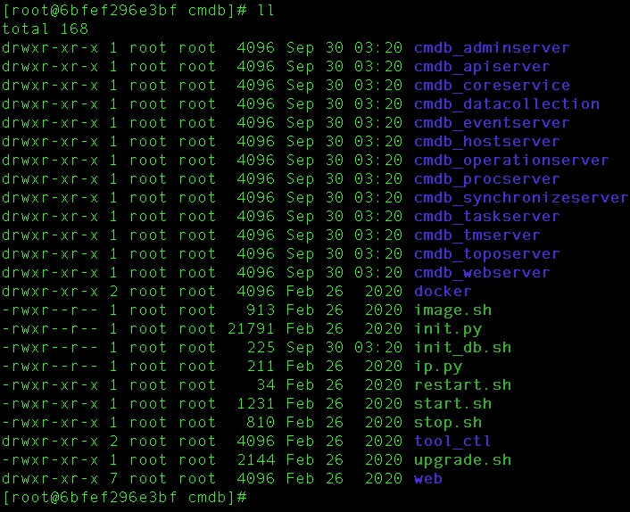
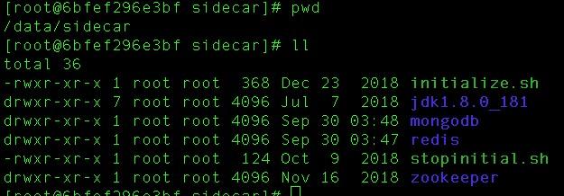
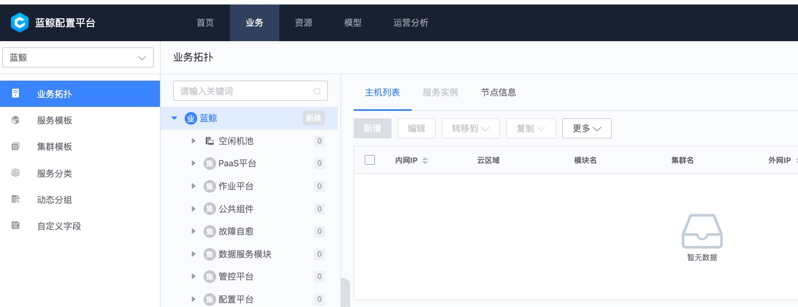

蓝鲸智云配置平台(BlueKing CMDB)
本文在蓝鲸cmdbv3.9.5上验证通过。
安装
目录和架构

- Web展示层
cmdb_webserver - API网关层
cmdb_apiserver - 服务层
- 原子业务层
cmdb_adminserver配置刷新、初始化数据写入等cmdb_eventserver事件订阅与推送cmdb_procserver系统进程cmdb_toposerver拓扑模型cmdb_hostserver主机cmdb_datacollection系统快照数据的采集cmdb_operationserver运营统计相关cmdb_synchronizeserver数据同步cmdb_taskserver异步任务管理
- 资源管理层
cmdb_coreservice - 存储层
/data/sidecar/{mongodb,redis}，提供数据存储、消息队列以及缓存  - 服务注册发现
/data/sidecar/zookeeper
Docker一键安装
docker run -d \
--name=cmdb \
--restart=always \
-v /Users/jeffchen/bak:/tmp/export \
-p 8090:8090 \
-p 18080:8080 \
ccr.ccs.tencentyun.com/bk.io/cmdb-standalone:v3.9.5
默认配置：
- zk
127.0.0.1:2181 - mongo
cc:cc@127.0.0.1:27017，dbcmdb - redis
127.0.0.1:6379，pwcc - web访问 http://127.0.0.1:8090/，默认用户
admin，不用密码 - 内部
8080端口是api服务 /tmp/export是mongo导出数据的目录

使用
业务建模
常见名词解释：
业务，指公司内部的一个项目或者产品，往往是一组相关服务（如：lb+web+db）的总体代表，是业务线的最小组成单元，有完整生命周期。集群，如果说业务是纵向概念，那么集群就是横向概念，代表空间区域的隔离，如：测试集群（可能公司内网）中的服务不应该访问生产集群（部署在公网云上）的接口，集群是可以扩缩容的，是高可用的基石，某种程度上来看，K8s体系中的Pod概念就是最小的集群。模块，是各种应用和服务的抽象：公司自研的App、Web是一种模块，数据库、中间件服务也是一种模块。每个模块都应该有对应的负责人。主机，和传统认知上的服务器有些区别，更接近Docker的实例概念：有IP地址、CPU核数、内存和磁盘容量、OS版本、运行状态，在这些基础上再扩充其他非必要属性，如：资产编号，所属区域等。
建模顺序：
部门-员工，基础字典，是其他模型中人员相关属性的选择列表数据源，由于开源版阉割了用户管理的功能，考虑用关联关系代替。- 导入
主机进资源池 - 新建
模块，有负责人，自研服务有对应的git地址 业务，公司的产品，所属部门、对应的负责人、当前生命周期（默认：上线）- 在
业务拓扑界面，每个业务下建立对应的集群-模块
权限认证
Docker版服务默认不开启权限，直接以admin操作，非常不安全，解决方案有2种：
- 使用原生服务：蓝鲸“全家桶”中的PaaS平台，请看官方文档
- 用自己的服务封装一层，大致思路如下：
- cmdb实例和其他DB一样，部署在内部安全网络中，不允许外部直接访问
- 只信任从指定网关地址过来的访问，实质是把权限解耦，托管给上游，参考这一篇文章详细介绍。
接口调用
注意事项:
- 在请求head中添加
BK_USER=admin;HTTP_BLUEKING_SUPPLIER_ID=0，否则会报错[user]授权信息查询失败 - api当前版本
v3，建议直接看github上docs/apidoc/v3.1下的文档，官网上的有点过期 - 建议使用api_server的端口，需要对外暴露
# 查询主机列表，默认空库
curl --location --request POST 'http://0.0.0.0:18080/api/v3/hosts/search' \
--header 'HTTP_BLUEKING_SUPPLIER_ID: 0' \
--header 'BK_USER: admin'
反馈:
{
"result": true,
"bk_error_code": 0,
"bk_error_msg": "success",
"permission": null,
"data": {
"count": 0,
"info": []
}
}
数据备份和恢复
mongo备份cmdb:
docker exec -it cmdb /data/sidecar/mongodb/bin/mongodump --host 127.0.0.1 --port 27017 --out /tmp/export --db cmdb- 打包压缩
tar -czvf cmdb.tar.gz /tmp/export/cmdb/
从备份恢复（在mongo/bin目录）:
1. docker exec -it cmdb /data/sidecar/mongodb/bin/mongorestore -h 127.0.0.1:27017 -d cmdb /tmp/export/cmdb/
坑:
- docker版默认会初始化db，写入部分业务模型，导致从备份导入后，出现重复记录
对接密码管理
由于cmdb有对接外部系统的需求，一些ci的账号信息不适合直接明文存储，这里提供一种解决思路，供参考：
KeePassXC 一种安全开源\跨平台的密码加密、存管工具
- ci记录的密码属性信息存入KeePassXC管理的.kdbx加密库中
- 基于py库
pykeepass构建密码查询接口，入参(ci分类, ci.id, [属性kv])，反馈解密后的报文（如：密码） - 在业务流程开发时，通过上面的接口，读取密码
TODO
- 主机信息自动采集和注册
- 对接统一服务平台入口